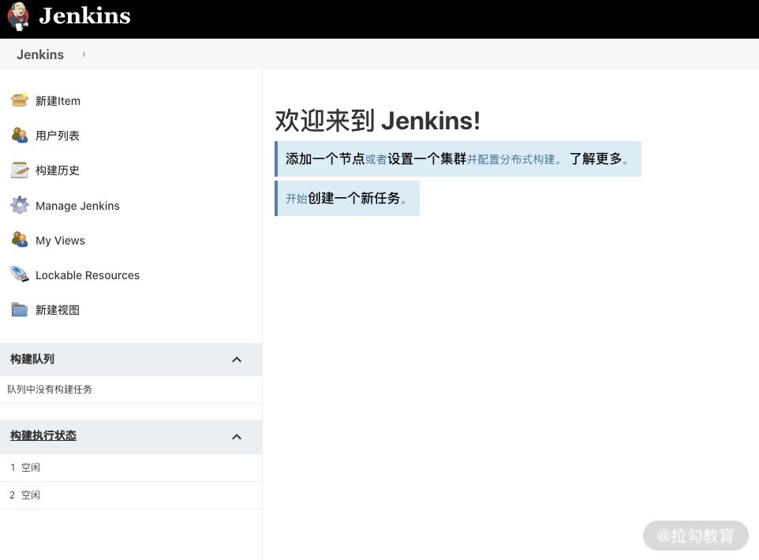
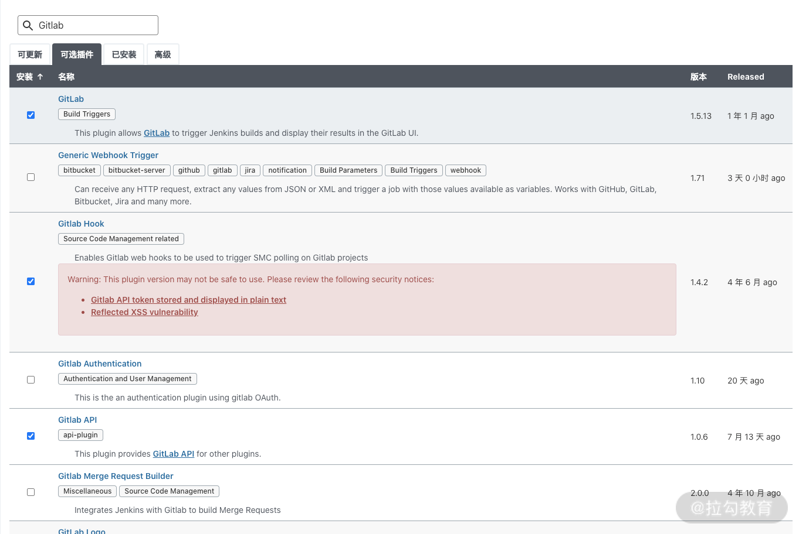

- 00 溯本求源，吃透 Docker！.md.html
- 01 Docker 安装：入门案例带你了解容器技术原理.md.html
- 02 核心概念：镜像、容器、仓库，彻底掌握 Docker 架构核心设计理念.md.html
- 03 镜像使用：Docker 环境下如何配置你的镜像？.md.html
- 04 容器操作：得心应手掌握 Docker 容器基本操作.md.html
- 05 仓库访问：怎样搭建属于你的私有仓库？.md.html
- 06 最佳实践：如何在生产中编写最优 Dockerfile？.md.html
- 07 Docker 安全：基于内核的弱隔离系统如何保障安全性？.md.html
- 08 容器监控：容器监控原理及 cAdvisor 的安装与使用.md.html
- 09 资源隔离：为什么构建容器需要 Namespace ？.md.html
- 10 资源限制：如何通过 Cgroups 机制实现资源限制？.md.html
- 11 组件组成：剖析 Docker 组件作用及其底层工作原理.md.html
- 12 网络模型：剖析 Docker 网络实现及 Libnetwork 底层原理.md.html
- 13 数据存储：剖析 Docker 卷与持久化数据存储的底层原理.md.html
- 14 文件存储驱动：AUFS 文件系统原理及生产环境的最佳配置.md.html
- 15 文件存储驱动：Devicemapper 文件系统原理及生产环境的最佳配置.md.html
- 16 文件存储驱动：OverlayFS 文件系统原理及生产环境的最佳配置.md.html
- 17 原理实践：自己动手使用 Golang 开发 Docker（上）.md.html
- 18 原理实践：自己动手使用 Golang 开发 Docker（下）.md.html
- 19 如何使用 Docker Compose 解决开发环境的依赖？.md.html
- 20 如何在生产环境中使用 Docker Swarm 调度容器？.md.html
- 21 如何使 Docker 和 Kubernetes 结合发挥容器的最大价值？.md.html
- 22 多阶级构建：Docker 下如何实现镜像多阶级构建？.md.html
- 23 DevOps：容器化后如何通过 DevOps 提高协作效能？.md.html
- 24 CICD：容器化后如何实现持续集成与交付？（上）.md.html
- 25 CICD：容器化后如何实现持续集成与交付？（下）.md.html
- 26 结束语 展望未来：Docker 的称霸之路.md.html
- 捐赠
24 CICD：容器化后如何实现持续集成与交付？（上）
上一讲，我介绍了 DevOps 的概念与 DevOps 的一些思想。DevOps 的思想可以帮助我们缩短上线周期并且提高软件迭代速度，而 CI/CD 则是 DevOps 思想中最重要的部分。
具体来说，CI/CD 是一种通过在应用开发阶段，引入自动化的手段来频繁地构建应用，并且向客户交付应用的方法。它的核心理念是持续开发、持续部署以及持续交付，它还可以让自动化持续交付贯穿于整个应用生命周期，使得开发和运维统一参与协同支持。
下面我们来详细了解下 CI/CD 。
什么是 CI/CD
CI 持续集成（Continuous Integration）
随着软件功能越来越复杂，一个大型项目要想在规定时间内顺利完成，就需要多位开发人员协同开发。但是，如果我们每个人都负责开发自己的代码，然后集中在某一天将代码合并在一起（称为“合并日”）。你会发现，代码可能会有很多冲突和编译问题，而这个处理过程十分烦琐、耗时，并且需要每一位工程师确认代码是否被覆盖，代码是否完整。这种情况显然不是我们想要看到的，这时持续集成（CI）就可以很好地帮助我们解决这个问题。
CI 持续集成要求开发人员频繁地（甚至是每天）将代码提交到共享分支中。一旦开发人员的代码被合并，将会自动触发构建流程来构建应用，并通过触发自动化测试（单元测试或者集成测试）来验证这些代码的提交，确保这些更改没有对应用造成影响。如果发现提交的代码在测试过程中或者构建过程中有问题，则会马上通知研发人员确认，修改代码并重新提交。通过将以往的定期合并代码的方式，改变为频繁提交代码并且自动构建和测试的方式，可以帮助我们及早地发现问题和解决冲突，减少代码出错。
传统 CI 流程的实现十分复杂，无法做到标准化交付，而当我们的应用容器化后，应用构建的结果就是 Docker 镜像。代码检查完毕没有缺陷后合并入主分支。此时启动构建流程，构建系统会自动将我们的应用打包成 Docker 镜像，并且推送到镜像仓库。
CD 持续交付（Continuous Delivery）
当我们每次完成代码的测试和构建后，我们需要将编译后的镜像快速发布到测试环境，这时我们的持续交付就登场了。持续交付要求我们实现自动化准备测试环境、自动化测试应用、自动化监控代码质量，并且自动化交付生产环境镜像。
在以前，测试环境的构建是非常耗时的，并且很难保证测试环境和研发环境的一致性。但现在，借助于容器技术，我们可以很方便地构建出一个测试环境，并且可以保证开发和测试环境的一致性，这样不仅可以提高测试效率，还可以提高敏捷性。
容器化后的应用交付过程是这样的，我们将测试的环境交由 QA 来维护，当我们确定好本次上线要发布的功能列表时，我们将不同开发人员开发的 feature 分支的代码合并到 release 分支。然后由 QA 来将构建镜像部署到测试环境，结合自动测试和人工测试、自动检测和人工记录，形成完整的测试报告，并且把测试过程中遇到的问题交由开发人员修改，开发修改无误后再次构建测试环境进行测试。测试没有问题后，自动交付生产环境的镜像到镜像仓库。
CD 持续部署（Continuous Deployment）
CD 不仅有持续交付的含义，还代表持续部署。经测试无误打包完生产环境的镜像后，我们需要把镜像部署到生产环境，持续部署是最后阶段，它作为持续交付的延伸，可以自动将生产环境的镜像发布到生产环境中。
部署业务首先需要我们有一个资源池，实现资源自动化供给，而且有的应用还希望有自动伸缩的能力，根据外部流量自动调整容器的副本数，而这一切在容器云中都将变得十分简单。
我们可以想象，如果有客户提出了反馈，我们通过持续部署在几分钟内，就能在更改完代码的情况下，将新的应用版本发布到生产环境中（假设通过了自动化测试），这时我们就可以实现快速迭代，持续接收和整合用户的反馈，将用户体验做到极致。
讲了这么多概念，也许你会感觉比较枯燥乏味。下面我们就动动手，利用一些工具搭建一个 DevOps 环境。
搭建 DevOps 环境的工具非常多，这里我选择的工具为 Jenkins、Docker 和 GitLab。Jenkins 和 Docker 都已经介绍过了，这里我再介绍一下 Gitlab。
Gitlab 是由 Gitlab Inc. 开发的一款基于 Git 的代码托管平台，它的功能和 GitHub 类似，可以帮助我们存储代码。除此之外，GitLab 还具有在线编辑 wiki、issue 跟踪等功能，另外最新版本的 GitLab 还集成了 CI/CD 功能，不过这里我们仅仅使用 GitLab 的代码存储功能， CI/CD 还是交给我们的老牌持续集成工具 Jenkins 来做。
Docker+Jenkins+GitLab 搭建 CI/CD 系统
软件安装环境如下。
- 操作系统：CentOS 7
- Jenkins：tls 长期维护版
- Docker：18.06
- GitLab：13.3.8-ce.0
第一步：安装 Docker
安装 Docker 的步骤可以在[第一讲]的内容中找到，这里就不再赘述。Docker 环境准备好后，我们就可以利用 Docker 来部署 GitLab 和 Jenkins 了。
第二步：安装 GitLab
GitLab 官方提供了 GitLab 的 Docker 镜像，因此我们只需要执行以下命令就可以快速启动一个 GitLab 服务了。
$ docker run -d \
--hostname localhost \
-p 8080:80 -p 2222:22 \
--name gitlab \
--restart always \
--volume /tmp/gitlab/config:/etc/gitlab \
--volume /tmp/gitlab/logs:/var/log/gitlab \
--volume /tmp/gitlab/data:/var/opt/gitlab \
gitlab/gitlab-ce:13.3.8-ce.0
这个启动过程可能需要几分钟的时间。当服务启动后我们就可以通过 http://localhost:8080 访问到我们的 GitLab 服务了。
图1 GitLab 设置密码界面
第一次登陆，GitLab 会要求我们设置管理员密码，我们输入管理员密码后点击确认即可，之后 GitLab 会自动跳转到登录页面。
图2 GitLab 登录界面
然后输入默认管理员用户名：[email protected]，密码为我们上一步设置的密码。点击登录即可登录到系统中，至此，GitLab 已经安装成功。
第三步：安装 Jenkins
Jenkins 官方提供了 Jenkins 的 Docker 镜像，我们使用 Jenkins 镜像就可以一键启动一个 Jenkins 服务。命令如下：
# docker run -d --name=jenkins \
-p 8888:8080 \
-u root \
--restart always \
-v /var/run/docker.sock:/var/run/docker.sock \
-v /usr/bin/docker:/usr/bin/docker \
-v /tmp/jenkins_home:/var/jenkins_home \
jenkins/jenkins:lts
这里，我将 docker.sock 和 docker 二进制挂载到了 Jenkins 容器中，是为了让 Jenkins 可以直接调用 docker 命令来构建应用镜像。
Jenkins 的默认密码会在容器启动后打印在容器的日志中，我们可以通过以下命令找到 Jenkins 的默认密码，星号之间的类似于一串 UUID 的随机串就是我们的密码。
$ docker logs -f jenkins
unning from: /usr/share/jenkins/jenkins.war
webroot: EnvVars.masterEnvVars.get("JENKINS_HOME")
2020-10-31 16:13:06.472+0000 [id=1] INFO org.eclipse.jetty.util.log.Log#initialized: Logging initialized @292ms to org.eclipse.jetty.util.log.JavaUtilLog
2020-10-31 16:13:06.581+0000 [id=1] INFO winstone.Logger#logInternal: Beginning extraction from war file
2020-10-31 16:13:08.369+0000 [id=1] WARNING o.e.j.s.handler.ContextHandler#setContextPath: Empty contextPath
... 省略部分启动日志
Jenkins initial setup is required. An admin user has been created and a password generated.
Please use the following password to proceed to installation:
*************************************************************
*************************************************************
*************************************************************
Jenkins initial setup is required. An admin user has been created and a password generated.
Please use the following password to proceed to installation:
fb3499944e4845bba9d4b7d9eb4e3932
This may also be found at: /var/jenkins_home/secrets/initialAdminPassword
*************************************************************
*************************************************************
*************************************************************
This may also be found at: /var/jenkins_home/secrets/initialAdminPassword
2020-10-31 16:17:07.577+0000 [id=28] INFO jenkins.InitReactorRunner$1#onAttained: Completed initialization
2020-10-31 16:17:07.589+0000 [id=21] INFO hudson.WebAppMain$3#run: Jenkins is fully up and running
之后，我们通过访问 http://localhost:8888 就可以访问到 Jenkins 服务了。

图3 Jenkins 登录界面
然后将日志中的密码粘贴到密码框即可，之后 Jenkins 会自动初始化，我们根据引导，安装推荐的插件即可。

图4 Jenkins 引导页面
选择好安装推荐的插件后，Jenkins 会自动开始初始化一些常用插件。界面如下：
图5 Jenkins 插件初始化
插件初始化完后，创建管理员账户和密码，输入用户名、密码和邮箱等信息，然后点击保存并完成即可。
图6 Jenkins 创建管理员
这里，确认 Jenkins 地址，我们就可以进入到 Jenkins 主页了。

图7 Jenkins 主页
然后在系统管理 -> 插件管理 -> 可选插件处，搜索 GitLab 和 Docker ，分别安装相关插件即可，以便我们的 Jenkins 服务和 GitLab 以及 Docker 可以更好地交互。


图8 Jenkins 插件安装
等待插件安装完成， 重启 Jenkins ，我们的 Jenkins 环境就准备完成了。
现在，我们的 Docker+Jenkins+GitLab 环境已经准备完成，后面只需要把我们的代码推送到 GitLab 中，并做相关的配置即可实现推送代码自动构建镜像和发布。
结语
Docker 的出现解决了 CI/CD 流程中的各种问题，Docker 交付的镜像不仅包含应用程序，也包含了应用程序的运行环境，这很好地解决了开发和线上环境不一致问题。同时 Docker 的出现也极大地提升了 CI/CD 的构建效率，我们仅仅需要编写一个 Dockerfile 并将 Dockerfile 提交到我们的代码仓库即可快速构建出我们的应用，最后，当我们构建好 Docker 镜像后 Docker 可以帮助我们快速发布及更新应用。
那么，你知道 Docker 还可以帮助我们解决 CI/CD 流程中的哪些问题吗？
© 2019 - 2023 Liangliang Lee. Powered by gin and hexo-theme-book.